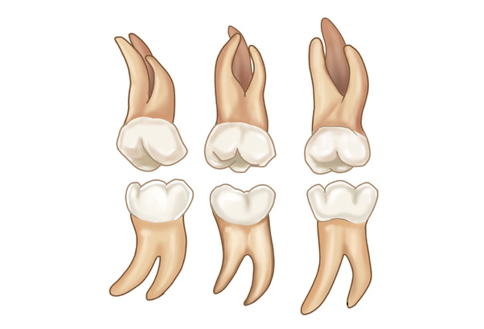
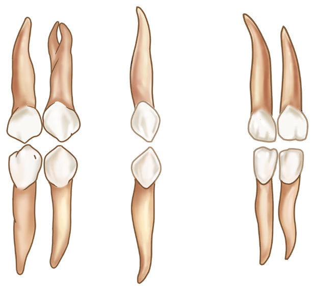

40
Student’s Book - Form Two
Biology for Secondary Schools
small intestine, large intestine and anus.
The first step before the beginning of the digestion process is called ingestion, which is the process of taking in food through the mouth. When food is in the mouth, digestion begins whereby food is broken down into small particles by the mechanical process known as chewing or mastication. The process of chewing is done by the teeth. In mammals, there are various types of teeth which differ in shape, size, and functions. This condition is known as heterodonty, where different teeth are specialised for various tasks like biting, tearing, grinding, and crushing food. There are four different types of teeth in human beings, namely incisors, canines, premolars and molars (Figure
2.2).
Incisors
These are found in the front part of the mouth. They have sharp chisel-like shape specialised for biting and cutting food or other substances. An adult has eight incisors, four in the upper jaw and four in the lower jaw.
Canines
These are located next to the incisors.
They have a sharp pointed shape specialised for holding and tearing food. An adult person has four canines, two in the upper jaw and two in the lower jaw.
Premolars
These are located just behind the canines. They have a broad shape and are specialised for crushing and
grinding food. An adult person has eight
premolars, four in the lower jaw and four
in the upper jaw.
Molars
They are located at the back of the mouth. They have a broader shape than premolars. They are specialised for grinding and crushing food into small particles that can be easily swallowed.
An adult person has twelve molars, six in the lower jaw and six in the upper jaw.


Incisors
Molars
Canines
Premolars
Figure 2.2: Types of human teeth
08/04/2026 10:18:14